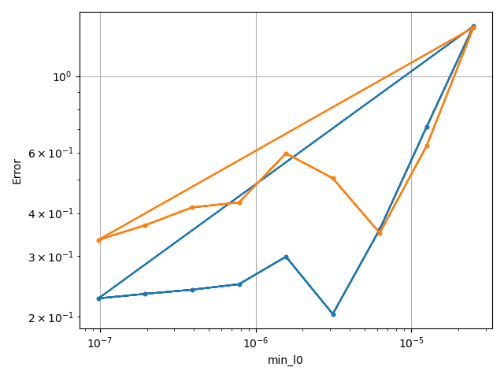
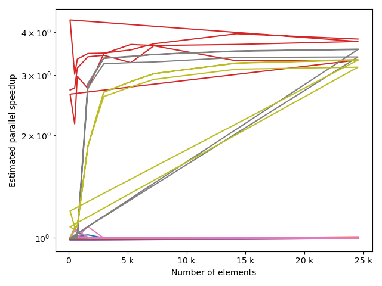
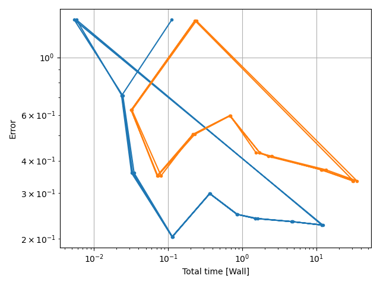
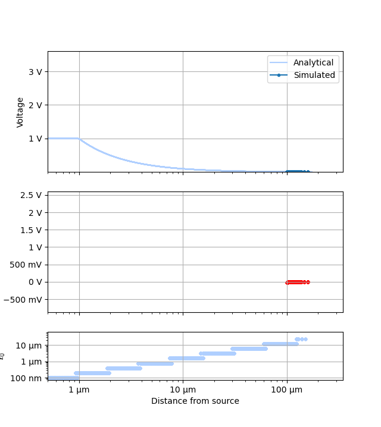

Note
Go to the end to download the full example code
Depth sweep#
Compare performance as mesh resolution increases. Generates ch3-4 data.
import xcell as xc
import Common_nongallery
import matplotlib.pyplot as plt
import argparse
import numpy as np
cli = argparse.ArgumentParser()
cli.add_argument("--comparison", choices=["bounds", "mesh", "formula", "bigPOC", "fixedDisc"], default="fixedDisc")
cli.add_argument("-p", "--plot-only", help="skip simulation and use existing data", action="store_true")
# cli.add_argument('-a','--animate',help='skip simulation and use existing data', action = 'store_true')
# cli.add_argument('-p','--plot-only',help='skip simulation and use existing data', action = 'store_true')
args = cli.parse_args()
generate = True
# plot performance info
staticPlots = True
depths = np.arange(3, 12)
xtraParams = None
xmax = 1e-4
if args.comparison == "mesh" or args.comparison == "bigPOC":
foldername = "Comparison/PoC"
tstVals = ["adaptive", "uniform"]
# tstVals=['adaptive','equal elements',r'equal $l_0$']
tstCat = "Mesh type"
if args.comparison == "formula" or args.comparison == "fixedDisc":
foldername = "Comparison/formulations"
tstVals = ["Admittance", "FEM", "Face"]
tstCat = "Element type"
if args.comparison == "bounds":
foldername = "Comparison/boundaries"
tstVals = ["Analytic", "Ground", "Rubik0"]
tstCat = "Boundary"
if args.comparison == "testing":
foldername = "Comparison/miniset"
tstVals = ["adaptive", "uniform"]
tstCat = "Mesh type"
generate = False
staticPlots = False
depths = np.arange(3, 8)
if args.comparison == "bigPOC":
foldername = "Comparison/bigPOC"
xmax = 1e-2
if args.comparison == "fixedDisc":
foldername = "Comparison/fixedDisc"
xtraParams = {"boundary_functionction": "Analytic"}
# if args.comparison=='voltage':
# tstVals=[False, True]
# tstCat='Vsrc?'
# generate animation(s)
plotters = [
xc.visualizers.ErrorGraph,
# xc.visualizers.ErrorGraph,
# xc.visualizers.SliceSet,
# xc.visualizers.LogError,
# xc.visualizers.CurrentPlot,
]
plotPrefs = [
None,
# {'onlyDoF':True},
# None,
# None,
]
study, _ = Common_nongallery.makeSynthStudy(foldername, xmax=xmax)
if generate and not args.plot_only:
Common_nongallery.pairedDepthSweep(
study, depthRange=depths, testCat=tstCat, testVals=tstVals, overrides=xtraParams
)
2.58777 Gb used
error: 1.39509
2.58777 Gb used
error: 1.38292
Calculating adjacency: 0%| | 0/120 [00:00<?, ?it/s]
Calculating adjacency: 1%| | 1/120 [00:00<00:29, 3.99it/s]
Calculating adjacency: 100%|██████████| 120/120 [00:00<00:00, 475.24it/s]
/Users/cgirard/mambaforge/envs/xcell/lib/python3.9/site-packages/scipy/sparse/linalg/_dsolve/linsolve.py:206: MatrixRankWarning: Matrix is exactly singular
warn("Matrix is exactly singular", MatrixRankWarning)
2.5873 Gb used
error: nan
2.58787 Gb used
error: 0.711183
2.58792 Gb used
error: 0.626179
Calculating adjacency: 0%| | 0/512 [00:00<?, ?it/s]
Calculating adjacency: 100%|██████████| 512/512 [00:00<00:00, 67291.81it/s]
/Users/cgirard/mambaforge/envs/xcell/lib/python3.9/site-packages/scipy/sparse/linalg/_dsolve/linsolve.py:206: MatrixRankWarning: Matrix is exactly singular
warn("Matrix is exactly singular", MatrixRankWarning)
2.58792 Gb used
error: nan
2.58795 Gb used
error: 0.358631
2.58805 Gb used
error: 0.350071
Calculating adjacency: 0%| | 0/736 [00:00<?, ?it/s]
Calculating adjacency: 100%|██████████| 736/736 [00:00<00:00, 65509.58it/s]
2.58807 Gb used
error: nan
2.58807 Gb used
error: 0.203653
2.58816 Gb used
error: 0.504739
Calculating adjacency: 0%| | 0/1632 [00:00<?, ?it/s]
Calculating adjacency: 100%|██████████| 1632/1632 [00:00<00:00, 64656.97it/s]
2.58818 Gb used
error: nan
2.58818 Gb used
error: 0.298805
2.5882 Gb used
error: 0.596175
Calculating adjacency: 0%| | 0/2976 [00:00<?, ?it/s]
Calculating adjacency: 100%|██████████| 2976/2976 [00:00<00:00, 60473.96it/s]
2.58839 Gb used
error: nan
2.58944 Gb used
error: 0.248566
2.60198 Gb used
error: 0.429459
Calculating adjacency: 0%| | 0/5272 [00:00<?, ?it/s]
Calculating adjacency: 80%|███████▉ | 4211/5272 [00:00<00:00, 12583.86it/s]
Calculating adjacency: 100%|██████████| 5272/5272 [00:00<00:00, 14963.84it/s]
2.60207 Gb used
error: nan
2.60207 Gb used
error: 0.239598
2.63931 Gb used
error: 0.415435
Calculating adjacency: 0%| | 0/7232 [00:00<?, ?it/s]
Calculating adjacency: 79%|███████▉ | 5721/7232 [00:00<00:00, 57198.46it/s]
Calculating adjacency: 100%|██████████| 7232/7232 [00:00<00:00, 57282.29it/s]
2.64092 Gb used
error: nan
2.64135 Gb used
error: 0.233044
2.67048 Gb used
error: 0.368771
Calculating adjacency: 0%| | 0/14232 [00:00<?, ?it/s]
Calculating adjacency: 38%|███▊ | 5341/14232 [00:00<00:00, 53404.58it/s]
Calculating adjacency: 75%|███████▌ | 10698/14232 [00:00<00:00, 53498.46it/s]
Calculating adjacency: 100%|██████████| 14232/14232 [00:00<00:00, 53738.71it/s]
2.77851 Gb used
error: nan
2.79457 Gb used
error: 0.226043
3.29538 Gb used
error: 0.334305
Calculating adjacency: 0%| | 0/24536 [00:00<?, ?it/s]
Calculating adjacency: 21%|██▏ | 5227/24536 [00:00<00:00, 52268.43it/s]
Calculating adjacency: 43%|████▎ | 10454/24536 [00:00<00:00, 52060.13it/s]
Calculating adjacency: 64%|██████▍ | 15704/24536 [00:00<00:00, 52256.48it/s]
Calculating adjacency: 85%|████████▌ | 20930/24536 [00:00<00:00, 51626.94it/s]
Calculating adjacency: 100%|██████████| 24536/24536 [00:00<00:00, 52150.34it/s]
3.46415 Gb used
error: nan
costcat = "Error"
# costcat='FVU'
# x_category='l0min'
xvalues = ["Number of elements", "min_l0", "Total time [Wall]"]
xtags = ["numel", "l0", "totTime"]
if staticPlots:
for x_category, xtag in zip(xvalues, xtags):
xc.visualizers.grouped_scatter(
study.study_path + "/log.csv", x_category=x_category, y_category=costcat, group_category=tstCat
)
fname = tstCat + "_" + costcat + "-vs-" + xtag
fname.replace(" ", "_")
nufig = plt.gcf()
study.save_plot(nufig, fname)
for fv in tstVals:
fstack, fratio = xc.visualizers.plot_study_performance(
study, plot_ratios=True, only_category=tstCat, only_value=fv
)
fstem = "_" + tstCat + str(fv)
study.save_plot(fstack, "Performance" + fstem)
study.save_plot(fratio, "Ratio" + fstem)


- 

- 


- 


/Users/cgirard/repos/xcell/xcell/visualizers.py:437: RuntimeWarning: More than 20 figures have been opened. Figures created through the pyplot interface (`matplotlib.pyplot.figure`) are retained until explicitly closed and may consume too much memory. (To control this warning, see the rcParam `figure.max_open_warning`).
fig = plt.figure()
for ii, p in enumerate(plotters):
plots = []
names = []
ranges = None
for fv in tstVals:
fname = p.__name__ + "_" + str(fv)
fname.replace(" ", "_")
plotr = p(plt.figure(), study, prefs=plotPrefs[ii])
if "universalPts" in plotr.prefs:
plotr.prefs["universalPts"] = True
if "onlyDoF" in plotr.prefs:
if plotr.prefs["onlyDoF"]:
fname += "-detail"
plotr.get_study_data(filter_categories=[tstCat], filter_values=[fv])
plots.append(plotr)
names.append(fname)
if ranges is not None:
plotr.unify_scales(ranges)
ranges = plotr.data_scales
for plot, name in zip(plots, names):
plot.data_scales = ranges
plot.animate_study(fname=name, fps=1.0)
- 
Total running time of the script: (3 minutes 4.150 seconds)